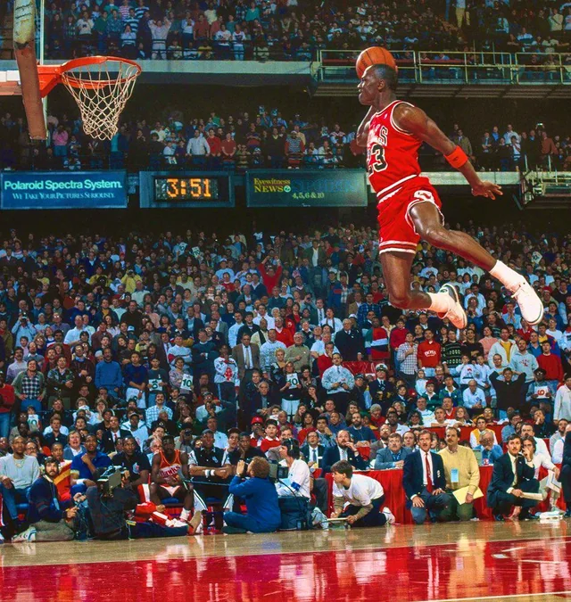
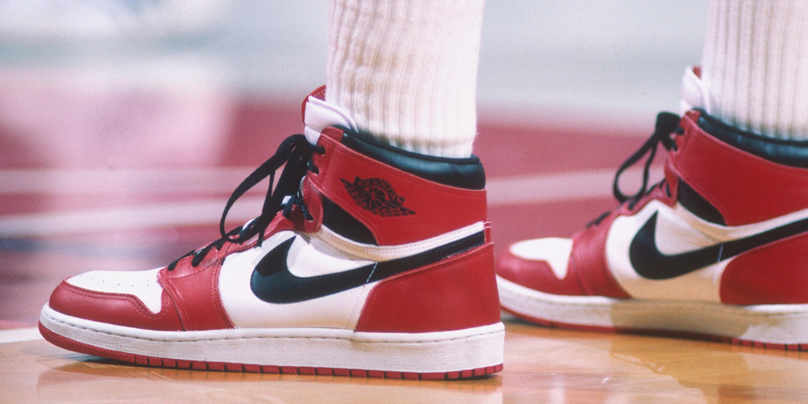
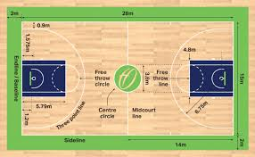
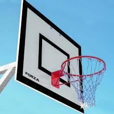
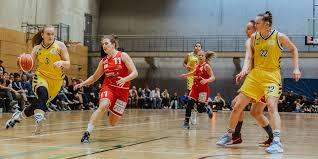

Basketball ist eine der beliebtesten Mannschaftssportarten der Welt.
Es wurde 1891 von James Naismith erfunden und
hat sich seitdem zu einer globalen Sportart entwickelt, die Millionen von Fans und Spielern begeistert.
Basketball wird auf professioneller, universitärer und Freizeitebene gespielt.
Melde dich für unseren Basketball-Newsletter an!
Legendäre Basketballspieler
Michael Jordan – 6x NBA-Champion, oft als der beste Spieler aller Zeiten angesehen.
LeBron James – Noch aktiv, aber bereits als einer der größten Spieler bekannt.
Kobe Bryant – Fünfmaliger NBA-Champion, bekannt für seine „Mamba Mentality“.

Berühmte Basketballstadien
Madison Square Garden – Heimstätte der New York Knicks.
Staples Center – Heimat der Los Angeles Lakers.
United Center – Michael Jordan machte dieses Stadion berühmt.
Basketball und Popkultur
Von Sneaker-Kultur bis Hip-Hop-Musik – Basketball prägt die Popkultur.

Die besten Basketballspiele aller Zeiten
NBA Finals 2016, Spiel 7 – LeBron James führte die Cavaliers zu einem historischen Titel.
NBA Finals 1998, Spiel 6 – Michael Jordan’s letzter Wurf für die Chicago Bulls.
Basketball-Quiz
Teste dein Wissen!
NBA-Standings
Team
Siege
Niederlagen

Die Regeln des Basketballs
Basketball ist ein schnelles und dynamisches Spiel, das zwei Teams mit jeweils fünf Spielern gegeneinander antreten lässt.
Ziel des Spiels ist es, den Ball durch den gegnerischen Korb zu werfen und dabei mehr Punkte als das andere Team zu erzielen.
Das Spielfeld ist rechteckig, mit einem Korb auf jeder Seite in einer Höhe von 3,05 Metern.
Ein Basketballspiel besteht aus vier Vierteln von jeweils 10 Minuten (in der NBA 12 Minuten).
Nach dem zweiten Viertel gibt es eine Halbzeitpause von 15 Minuten. Falls es nach der regulären Spielzeit unentschieden steht,
wird das Spiel mit einer Verlängerung von fünf Minuten fortgesetzt, bis ein Sieger feststeht.
Punktevergabe:
Ein erfolgreicher Wurf innerhalb der Dreipunktelinie zählt 2 Punkte.
Ein Treffer von außerhalb der Dreipunktelinie bringt 3 Punkte.
Ein Freiwurf zählt 1 Punkt.
Wichtige Regeln:
Dribbeln ist erforderlich: Spieler dürfen nicht mit dem Ball in der Hand laufen (Schrittfehler).
Die Shot Clock beträgt 24 Sekunden – das Team muss innerhalb dieser Zeit einen Wurf abgeben.
Nach einem Korberfolg hat das gegnerische Team 8 Sekunden Zeit, um den Ball aus der eigenen Hälfte zu bringen.
Körperkontakt ist eingeschränkt – zu viel Kontakt kann als Foul gewertet werden.
Fouls und Strafen:
Ein persönliches Foul wird bei übermäßigem Körperkontakt verhängt.
Ab fünf Teamfouls pro Viertel erhält das gegnerische Team Freiwürfe.
Ein Spieler, der fünf persönliche Fouls (in der NBA sechs) begeht, scheidet aus dem Spiel aus.
Die Ausrüstung im Basketball
Zum Basketballspielen benötigt man relativ wenig Ausrüstung. Der wichtigste Bestandteil ist ein Basketball,
der aus Leder oder Synthetikmaterial besteht und durch seine spezielle Beschichtung einen guten Grip bietet.
Er muss die richtige Größe und das passende Gewicht für die jeweilige Altersklasse haben.
Ein offizielles Basketballfeld ist **28 x 15 Meter** groß und hat klar markierte Linien für Spielfeldgrenzen,
die Dreierlinie, die Freiwurflinie und die Mittellinie. Die beiden Basketballkörbe sind auf einer Höhe von **3,05 Metern** befestigt
und bestehen aus einem stabilen Metallring mit einem Netz.
Weitere wichtige Ausrüstungsgegenstände
Basketball-Schuhe: Sie bieten optimalen Halt, Dämpfung und Schutz für die Gelenke.
Sportbekleidung: Leichte Trikots und Shorts ermöglichen maximale Bewegungsfreiheit.
Schweißbänder & Knieschoner: Helfen, den Schweiß zu absorbieren und Verletzungen zu vermeiden.
Basketball-Rückwand (Backboard): Besteht aus Acryl oder Glas und beeinflusst das Spiel beim Bank Shot.
Trainingshilfen: Hütchen, Widerstandsbänder und Dribbeltrainer für effektives Training.
Während für ein einfaches Freizeitsportspiel ein einfacher Ball und ein Korb ausreichen,
ist für professionelles oder wettbewerbsorientiertes Basketballspielen eine hochwertige Ausstattung entscheidend.
Die richtige Ausrüstung sorgt für bessere Leistung, Komfort und Sicherheit auf dem Spielfeld.
Bekannte Basketball-Ligen
Die bekannteste Liga ist die NBA (National Basketball Association) in den USA.
In Europa sind die EuroLeague und die deutsche Basketball-Bundesliga (BBL) sehr bekannt.
Basketball wird auf der ganzen Welt gespielt und die FIBA, der internationale Basketballverband, organisiert die Weltmeisterschaften und die Olympischen Turniere.
i

Die Entwicklung des Frauenbasketballs
Frauenbasketball hat in den letzten Jahren erheblich an Bedeutung gewonnen. Die WNBA (Womens National Basketball Association) wurde 1996 gegründet und hat seither stetig an Popularität zugenommen.
Viele weibliche Spielerinnen haben beeindruckende Karrieren aufgebaut und inspirieren junge Mädchen weltweit, Basketball zu spielen.
In Deutschland und anderen europäischen Ländern gibt es ebenfalls wachsende Ligen und Turniere für Frauenbasketball, was die Diversität und Inklusion im Sport weiter fördert.

Gründe, warum Basketball so beliebt ist
Basketball ist ein schnelles und spannendes Spiel.
Es erfordert sowohl körperliche als auch mentale Stärke.
Das Spiel fördert Teamarbeit und Kommunikation.
Es kann auf verschiedenen Ebenen und von fast jedem gespielt werden.
Die Athleten zeigen oft unglaubliche Fähigkeiten und Akrobatik.